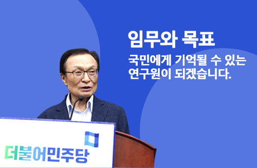
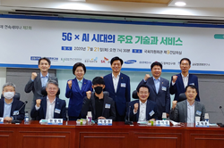
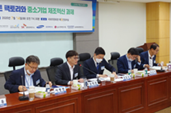
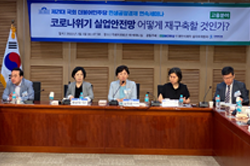

모바일 메뉴 열기

회색선
정책브리핑
연구원활동
언론보도
의사소통TV
회색선
공지사항
+더보기
혁신경제 연속세미나
2020-07-07
제21대 국회 초선의원 혁신포럼
2020-06-23
민주사법개혁 연속세미나
2020-06-16
연구보고서
+더보기
혁신적 포용의 비전과 어젠다 - 새 100년···
2019-04-29
대한민국 중심정당의 혁신적 포용노선 -···
2019-04-24
지방정부(민선6기) - 사회적경제 좋은정···
2019-04-15
자료실
+더보기
문재인 정부 사회적경제 정책모음집
2019-05-09
2018년 전국동시지방선거 공약자료집
18-05-21
「더불어민주당」 6·13지방선거 ‘10대···
18-05-21
회색선
회색선

혁신경제 연속세미나
(2회)
인공지능 분야

혁신경제 연속세미나
(1회)
스마트 팩토리 분야

민생공정경제 연속세미나
(6회)
고용 분야
회색선